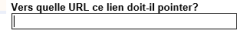
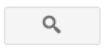
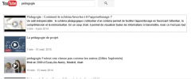
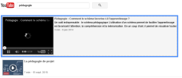

Créer un billet / article de Blogue
 | Vous êtes maintenant sur la page : « Aperçu » de votre blogue. |
Cliquer sur le bouton : « Nouveau message ». |
Vous êtes maintenant dans la page de rédaction de votre billet / article de blogue. |  |
Rédigez votre texte en utilisant la : « barre de mise en forme » (voir la partie : « Barre de mise en forme »).
Paramétrer les options de votre billet ou article en utilisant la palette : « Paramètres des messages » (voir la partie : « Paramètres du message »).
Barre de mise en forme
Modifier le texte
Changer de police de caractère
Il est possible de changer de police de caractère grâce à cette fonction.
Changer la taille du texte
Il est possible de changer la taille du texte grâce à cette fonction :
Créer des titres, sous-titres, etc. (changer la feuille de style du texte)
Vous pouvez changer le style d'un texte grâce aux feuilles de style préétablies par Google Blogger :
Changer la couleur d'un texte
Vous pouvez changer la couleur d'un texte grâce à cette fonction :
Surligner le texte avec de la couleur
Il est possible de surligner du texte et de choisir la couleur de surlignage grâce à cette fonction :
Aligner le texte
Vous pouvez aligner le texte en utilisant cette fonction.
Insérer un hyperlien
Grâce à l'interface : « Modifier le lien », vous pouvez insérer un lien.
Entrer le texte à afficher du lien dans le champ : «Texte à afficher ».
Entrer le l'adresse WEB du lien dans le champ : « Vers quelle URL ce lien doit-il pointer ».

Sélectionner la case d'option (bouton radio) : «Adresse Web » spécifiant que votre lien est un lien WEB
ou la case d'option (bouton radio) : « Adresse courriel », pour une adresse courriel :
Vous pouvez tester ce lien en cliquant sur l'hyperlien : « Tester ce lien ».
Pour afficher le lien dans une nouvelle fenêtre activer l'option : « Ouvrir lien nouvelle fenêtre ».
Cliquer sur bouton : « OK ».
Insérer une séquence vidéo
Insérer une séquence vidéo à partir d'un fichier
Insérer une séquence vidéo à partir de Youtube
Cliquer sur le bouton : « Ajouter une vidéo ».
Cliquer sur l'onglet : « Youtube ».
Entrer ce que vous rechercher comme séquence vidéo dans le champ de recherche.
Par exemple :
Cliquer sur le bouton en forme de loupe pour effectuer la recherche.

Une liste de résultats de recherche s'affiche.

Sélectionner un résultat dans la liste de résultats de recherche.

Cliquer sur le bouton : « Sélectionner ».